概括
免费无广告，官方中文，上佳WIN/MAC/LINUX端阅读器/编辑器，适合轻小说，漫画爱好者，kindle用户。
支持格式：EPUB、MOBI、TXT、PDF、ZIP、RTF、AZW3、DOCX、FB2、HTMLZ、LIT、LRF、PDB、PMLZ、RB、RTF、SNB、TCR、TXTZ
简述
前些天想看看看看漫画培养一下少女心，因为找到的漫画资源是epub格式的，所以苦寻PC上epub阅读器。
试用了readium作者的桌面版产品Thorium，结果不尽人意，后来又试了下微软商店里的干净阅读，感觉差了点什么。
最后在知乎发现了这款软件
上手把玩了下，一种如获至宝的喜悦感油然而生，对开发者的匠心赞叹不已。从软件中能明显感觉到开发者那种仔细打磨，我也很奇怪，反正就是这种突如其来的感觉。
面对这款软件，真的满满的幸福感。正好心血来潮，写篇文章记录一下
作者简介啥的就不说了，捐赠的时候看作者的照片有点像印度人？
界面展示
清爽的界面
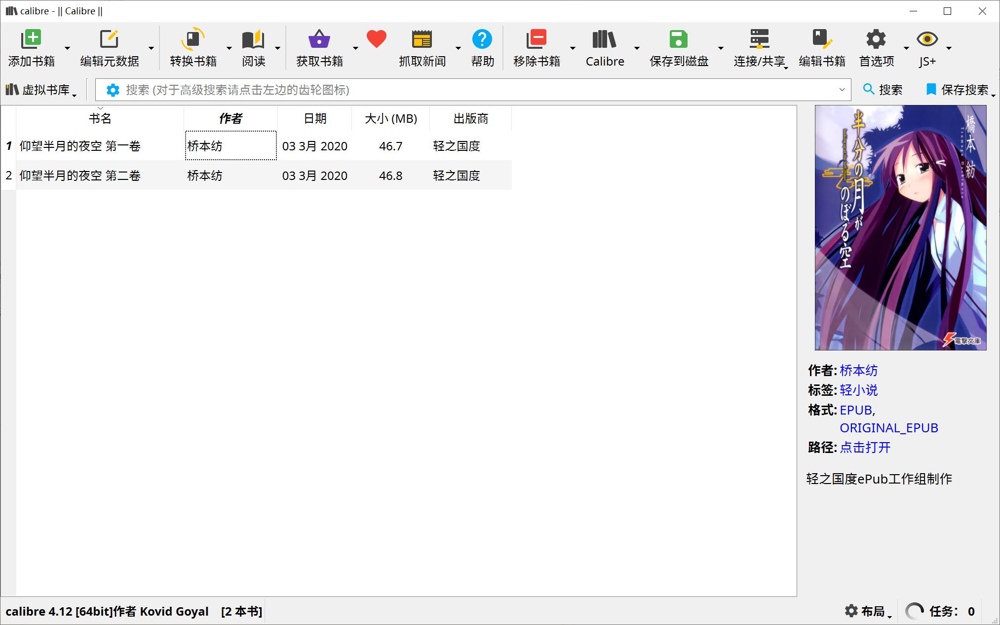
可切换布局
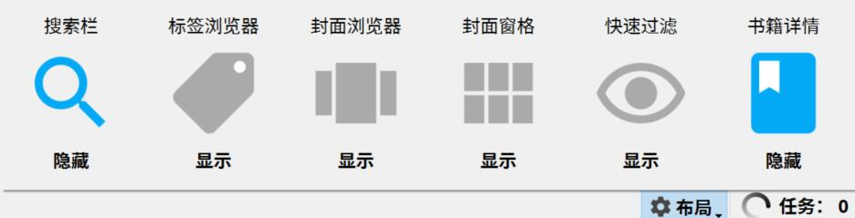
多样化设置
可改图标、界面字体、文本字体
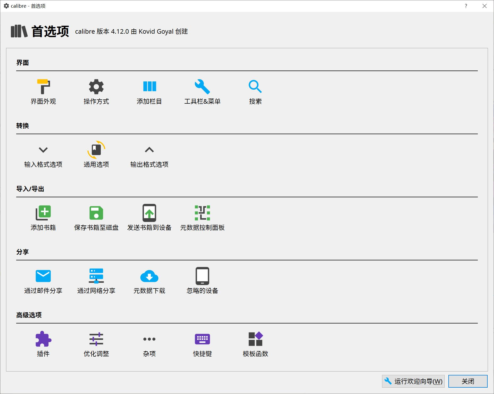
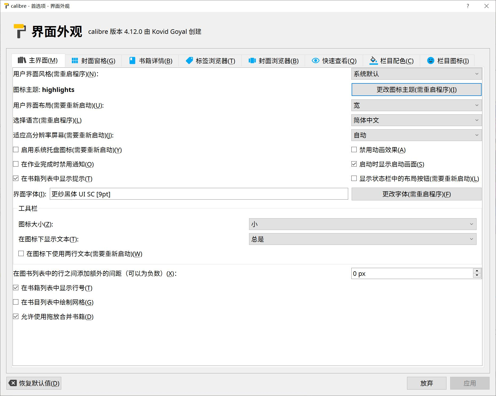
在线搜书、新闻抓取 自定义RSS源
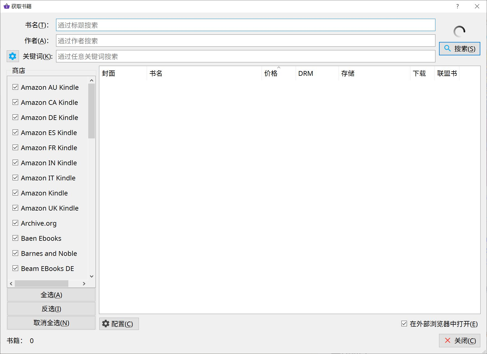
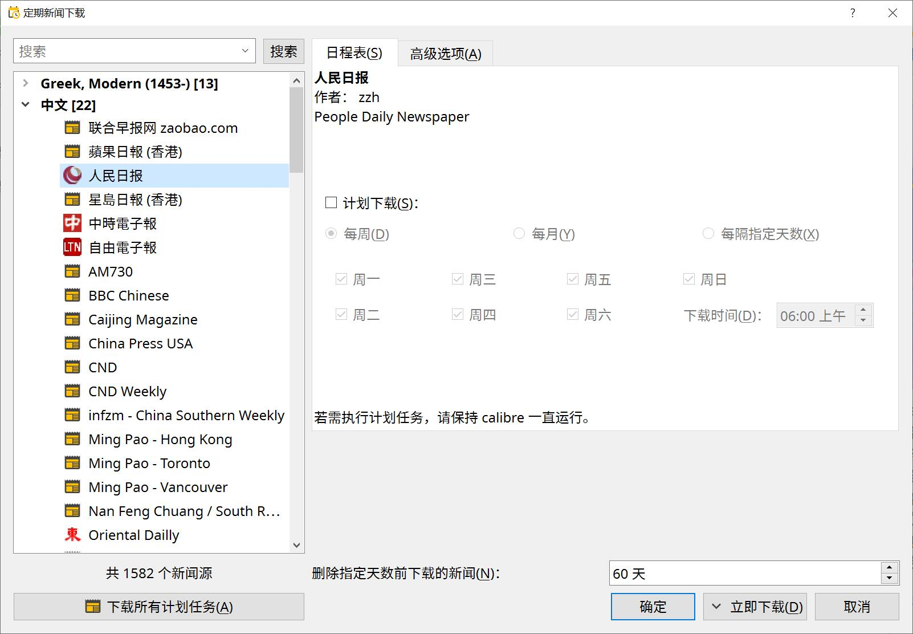
插件
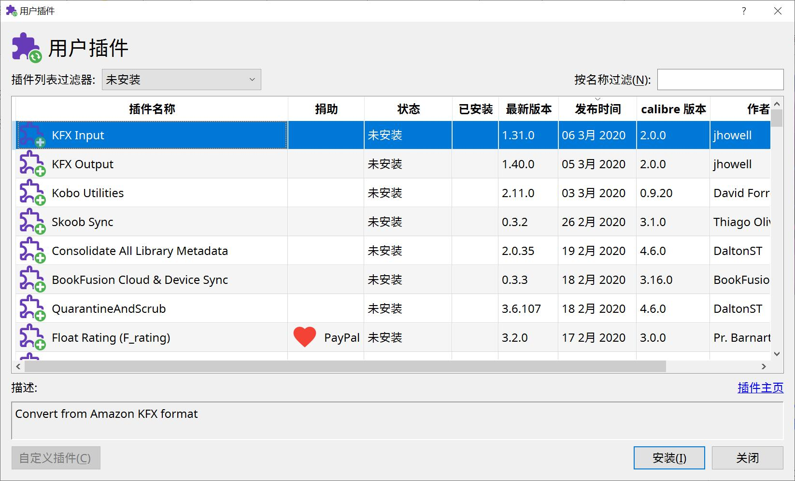
里面能定制化的地方真的很多，功能丰富但不臃肿，还有文本编辑功能，可以拿来做epub之类的。虽然绝大部分功能我也只是看看用不来，但这软件并没有给我一种专业人士使用的感觉，而是十分的平易近人。
更改文本字体演示
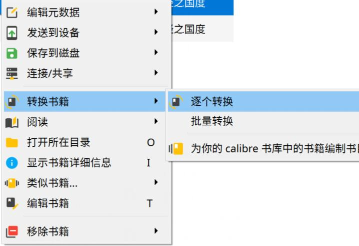
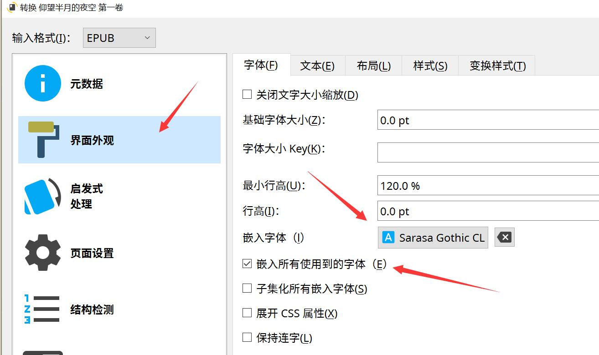
然后转换一下，会生成新的内嵌字体的文本，原来的文本还是在的
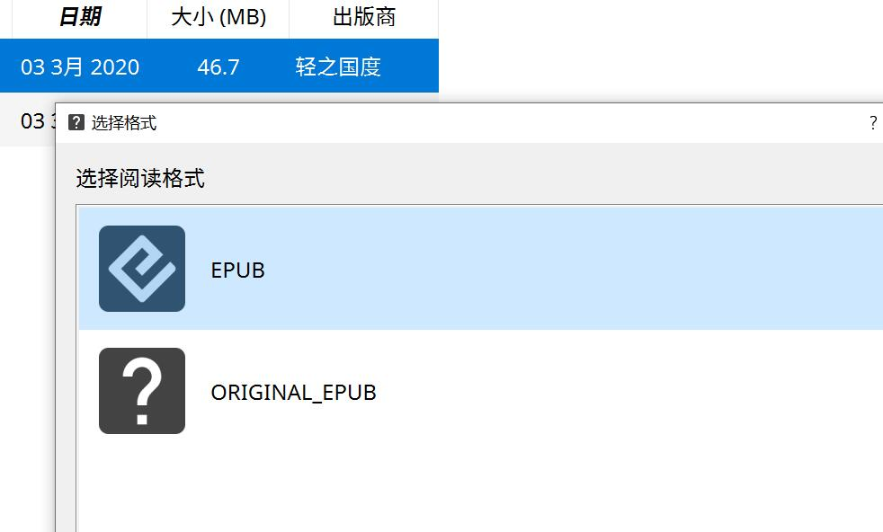
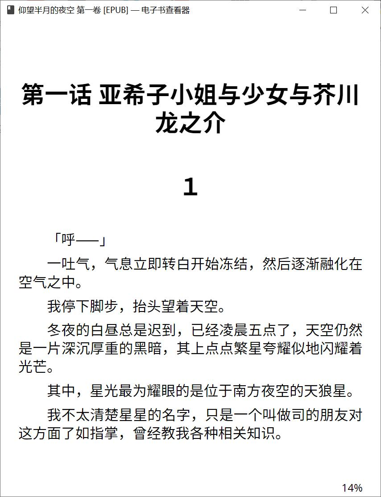
注释功能也有
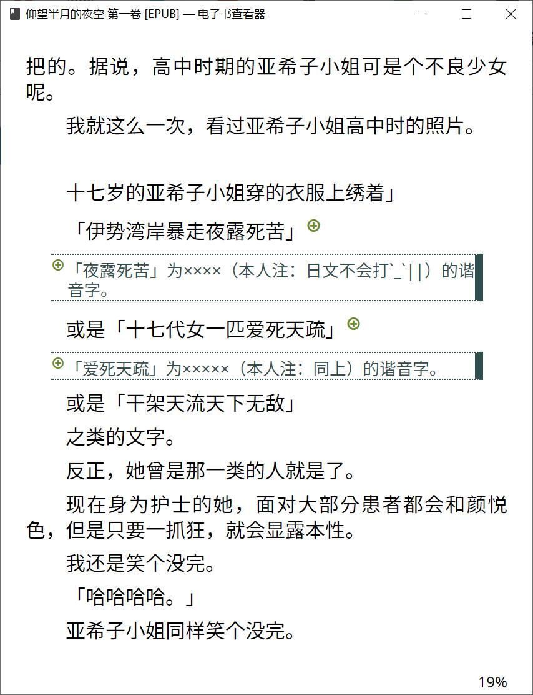
结语
真的很强大，更多功能也在挖掘中，慢慢更新。